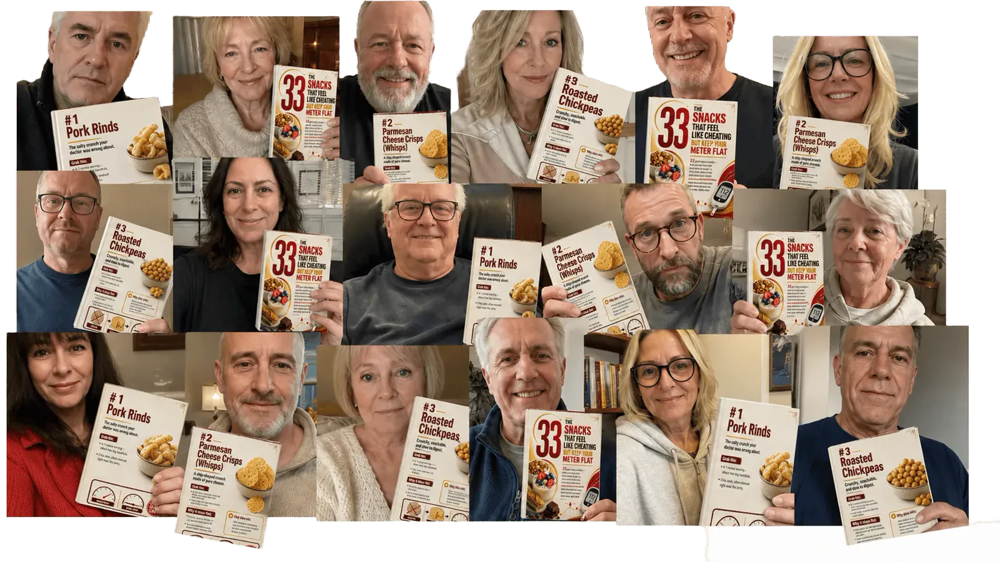
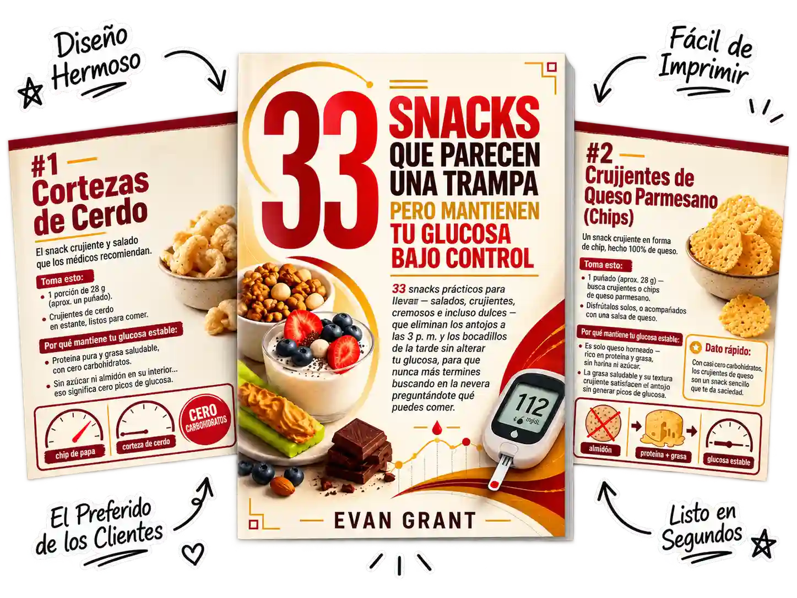

¡ESPERA! No olvides descargar tus…
TARJETAS IMPRIMIBLES
Los 33 bocadillos que parecen un capricho, pero mantienen estable tu medidor
- Los 33 bocadillos permitidos, probados previamente
- Cada porción calculada al gramo
- El medidor permanece estable desde el primer bocado
- Antojos eliminados sin provocar picos
- Marcas del supermercado, sin hacer cálculos
- Nunca más contar carbohidratos
- No requiere cocinar ni preparar nada
- Funciona desde el primer bocadillo
- Tuyo para siempre — descarga inmediata
Cuando preguntamos a nuestros clientes qué era lo que realmente los frenaba, la respuesta número 1 nos sorprendió

Cuando preguntamos a nuestros clientes qué era lo que realmente los frenaba, la respuesta número 1 nos dejó atónitos: «El desayuno está resuelto, pero en cuanto llegan las 3 p. m. y comienzan los antojos, estoy a una galleta de una lectura de 220».
¿Y sinceramente? Tiene todo el sentido. Nadie les había dado una lista real de bocadillos que mantuvieran el medidor realmente estable — así que, cuando llega el hambre, solo queda la fuerza de voluntad o sufrir un pico.
Ese momento del bocadillo a media tarde es el mayor obstáculo que vemos. Comes bien, llegan las 4 p. m., los antojos ganan y vuelves a ver cómo ese mismo valor superior a 200 aumenta otra vez — mes tras mes. Las mismas restricciones. La misma privación. El mismo ciclo.
¿Y si pudieras saltarte por completo esa etapa y empezar con 33 bocadillos permitidos que saben a galletas, papas fritas y helado, mientras tu medidor apenas se mueve? Eso es exactamente lo que te ofrece esta mejora: el bocadillo sin el pico, listo.
Esto es todo lo que recibirás hoy
Valor total de $197

- El bocadillo más sorprendente de la lista — el número 14, ese bocado salado y crujiente que tu médico te dijo que dejaras — no moverá tu medidor ni un punto.
- De los 33, el bocadillo que los participantes juraron que parecía EL MAYOR capricho — y aun así sus medidores permanecieron más estables que después de un vaso de agua.
- Lo crujiente y salado siempre provoca un pico en una persona diabética, ¿verdad? FALSO — uno de estos bocadillos cruje como una papa frita y tu medidor ni siquiera se inmutará.
- LA VERDAD SOBRE EL BOCADILLO QUE TU MÉDICO PROHIBIÓ — ¿realmente está prohibido o se ha equivocado por completo todo este tiempo?
- ELIMINA EL BAJÓN DE LAS 4 con un puñado listo para llevar — salado, crujiente, cremoso o incluso de chocolate — mientras tu medidor permanece completamente estable.
- ACABA CON EL BAJÓN DE LA TARDE con una cucharada cremosa — los antojos pierden su fuerza, la niebla mental desaparece y tu monitor permanece estable.
- ¿Qué es lo peor que podrías elegir cuando aparecen los antojos de media tarde, y por qué probablemente está ahora mismo en tu cajón?
- 33 bocadillos que parecen un capricho, cada uno clasificado según el antojo exacto que elimina — para que nunca más mires el refrigerador sin saber qué es seguro.
- Si alguna vez entraste en pánico frente a la despensa y elegiste lo equivocado, pega esta lista dentro de la puerta y no vuelvas a entrar en pánico.
- ADEMÁS — descubre exactamente en qué pasillo del supermercado se encuentra cada bocadillo, para llenar todo el cajón en una sola visita y sin volver sobre tus pasos.
Tu garantía de devolución del dinero de 365 días
Añádelo hoy, prueba los bocadillos y, si no estás encantado durante todo un año, simplemente envíanos un correo electrónico para recibir un reembolso completo. No arriesgas nada — el único riesgo es abandonar esta página sin obtenerlo.